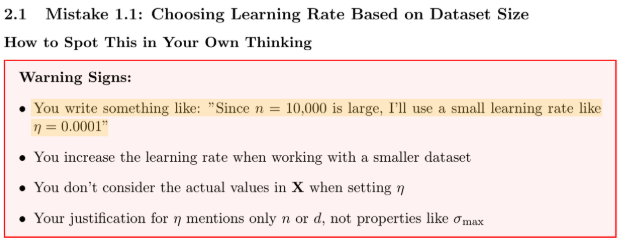
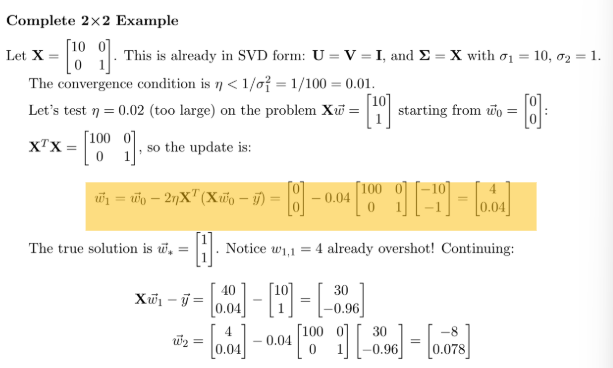
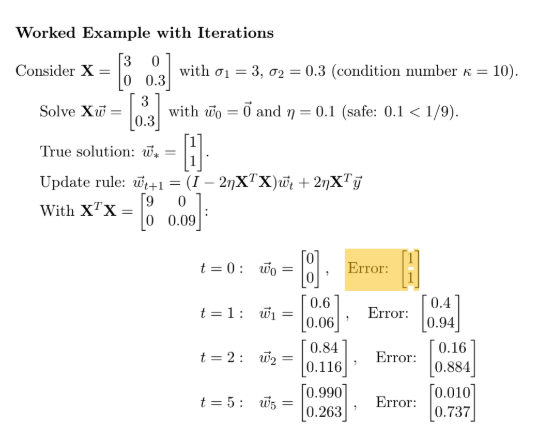
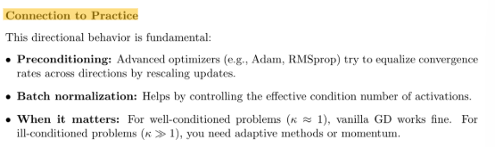
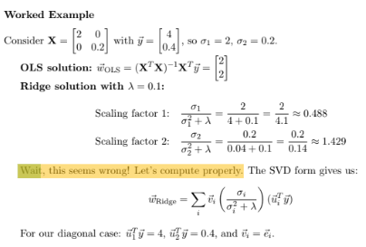
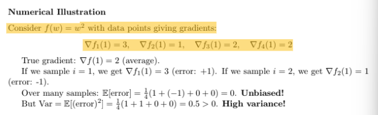
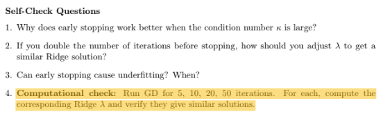
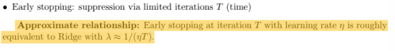
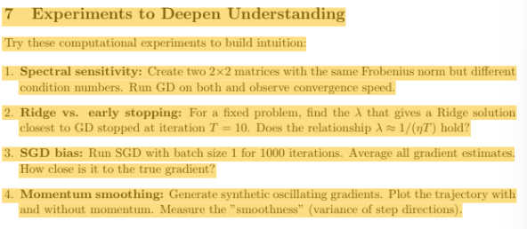

Hey everyone,
I wanted to share my experience using an LLM to generate a "Common Mistakes" guide for my optimization lecture notes. I wanted to build a guide that addresses common student conceptual pitfalls to help me check my understanding of lecture material before/during homework.
TL;DR: careful prompting dramatically improved conceptual structure, but mathematical errors make the output dangerous. Even though this didn't work super well, I think it still is useful to know that we can't easily prompt models to identify potential student misconceptions/pitfalls purely from lecture material. And I think this reflects on a shared student experience these days: AI can explain the lecture notes but it struggles to identify the student knowledge state, which is critical in guiding students from misunderstanding to mastery using the correct level of rigor.
Here are my results:
(I used the .tex lecture notes generated from Jameson Liu. See ed thread #301)
1) with chatGPT
2) with claude
My General Commentary:
My first attempt with ChatGPT was a disaster—superficial and completely missed that data geometry drives optimization behavior. So I crafted a detailed prompt forcing the AI to: (1) analyze the "big picture" first, (2) identify where students shift from scalar to geometric thinking, (3) derive misconceptions organically from lecture structure, (4) organize around themes, and (5) include worked examples. The prompt was topic-agnostic.
The conceptual improvements were real. The AI organized misconceptions into coherent themes like "Spectral Properties vs. Dataset Size," consistently used geometric language ("elongated bowl," "steep walls"), correctly identified SVD as the unifying framework, and created an excellent debugging checklist. The warning signs were specific: "Your justification for η mentions only n or d, not σ_max."
But the mathematics is catastrophically wrong. Worked examples have incorrect arithmetic that doesn't even stay consistent across steps. Claims are asserted without justification then "verified" with completely different numbers handwaved as "similar patterns." Examples reference undefined quantities. I couldn't verify most calculations due to missing steps, ambiguous notation, or wrong arithmetic.
The fundamental problem: the AI confidently generates mathematical content it cannot verify. It's sophisticated enough to be convincing but wrong enough to be dangerous. Students won't spot errors because the surrounding text sounds authoritative. The time sink is verification, not generation.
---------------------------------------
My Specific Commentary For Claude Generation:
The "Experiments to Deepen Understanding" section lists good ideas but provides no guidance on implementation, what to observe, or what conclusions to draw. Telling students to "measure the smoothness (variance of step directions)" for momentum without explaining how to compute this or what values to expect is not helpful. These experiments need more scaffolding.
Despite the improved tone, the fundamental framing is still "here are mistakes and how to fix them" rather than "here's how to build robust understanding." The guide would be stronger if it started each section with "Here's what you should understand" and then showed common pitfalls as deviations from that understanding, rather than leading with the mistakes
Theme 1, Mistake 1.1: First warning sign is too specific. The third is too vague
Math Hallucination! In the complete 2x2 example, there's a critical arithmetic error that undermines the entire demonstration. The guide gets [4 0.04]^T for w1, but really this should be [40, 0.04]^T. This makes the calculation for w2 incorrect as well. This is a serious pedagogical failure because students trying to verify the calculation will get confused and lose trust in the material. A worked example with wrong arithmetic is worse than no example at all.
The guide states "Error [1,1]^T" but never defines what "Error" means here. Is this w* - wt or wt - w*? The inconsistent usage makes it impossible to verify the calculations. Later it says "error multiplied by 0.8 per iteration" but earlier showed the update factor as (1−2*0.1*9)=−0.8, which is negative. The magnitude is 0.8, sure, but this distinction matters when students are trying to understand convergence versus oscillation.
While the "Connection to Practice" sections are useful, they're too brief and disconnected from the main exposition. For instance, when discussing condition number, the guide mentions batch normalization helps but doesn't explain how or why it affects the condition number. These connections feel tacked on rather than integrated. A student reading this still won't understand why practitioners obsess over things like feature normalization.
The guide calculates scaling factors and then says "Wait, this seems wrong!" This is pedagogically bizarre. It makes it seem like even the guide author is confused. The issue is that the guide conflates two different quantities: the scaling factor sigma_i / (sigma_i^2 + lambda)
(which appears in the formula) with the actual shrinkage of the final solution. When it says scaling factor 2 is 1.429 (which is >1), this should have been a red flag that something was wrong with the setup. The "correction" that follows is actually computing a different quantity (wi,Ridge) without clarifying the distinction. This will confuse students who are trying to understand what the scaling factor actually means.
The numerical illustration considers f(w) = w^2 and claims data pts give gradients of f1(1)=3, etc. But this doesn't make sense. If f(w) = w^2, the the gradient is 2w, and so the gradient evaluated at 1 should be 2 always. The guide seems to be trying to show per sample gradients but it never defines what the individual fi functions are. This example fails because it;s trying to illustrate a concept without properly setting up the mathematical framework. Students will be confused about what "data points giving different gradients" means for the same function at the same point.
Many of the self-check questions ask for numerical calculations rather than conceptual reasoning
There is not justification or derivation of the claim that early stopping has a specific ridge equivalent. This is presented as fact but is actually a loose heuristic that depends heavily on the problem structure. The worked example that follows doesn't really validate this relationship—the numbers are completely different (w3 = [.936, .174], wridge =[.730,.026]). The guide just handwaves this as "similar patterns." This is intellectually dishonest. If the relationship is approximate, explain why and under what conditions it holds.
The "Experiments to Deepen Understanding" section lists good ideas but provides no guidance on implementation, what to observe, or what conclusions to draw. Telling students to "measure the smoothness (variance of step directions)" for momentum without explaining how to compute this or what values to expect is not helpful. These experiments need more scaffolding.
Despite the improved tone, the fundamental framing is still "here are mistakes and how to fix them" rather than "here's how to build robust understanding." The guide would be stronger if it started each section with "Here's what you should understand" and then showed common pitfalls as deviations from that understanding, rather than leading with the mistakes.
You are an expert CS educator and pedagogy researcher. I will provide you with a set of notes for a CS course topic. Using only those notes, produce the following:
1. A pedagogy guide for instructors. This should include: the key learning objectives for the topic; the conceptual prerequisites students need; recommended teaching strategies and sequencing; examples or demonstrations that instructors should use; common points of confusion; suggested scaffolding approaches; and ideas for quick formative assessments. Write this guide for instructors, not for students.
2. A list of common student misconceptions that are likely to appear when learning this topic. For each misconception, provide a short name, a clear description, an explanation of why students tend to form this misunderstanding, and observable symptoms an instructor might see in student work or explanations. Ensure the misconceptions are non-redundant and realistically grounded in CS pedagogy.
3. One or two realistic scenarios for each misconception, showing how a student might express it in class, on homework, or in office hours. These scenarios should be short and should reveal the underlying misunderstanding, ideally through example code, reasoning steps, or verbal explanations.
4. Ideal instructor responses to each scenario. These responses should use sound pedagogy: guiding questions instead of answers, prompts that help surface the student’s mental model, and steps that help the student revise their understanding. For each response, briefly explain why the chosen prompts are pedagogically effective.
Present the output in the order: pedagogy guide, misconception list, scenarios, ideal responses. Use clear, concise writing. Do not introduce external content; rely only on the notes I provide.
Format Rules:
At the end, I will paste the notes for the topic.
You are an expert pedagogy consultant tasked with creating a student-facing "Common Mistakes" guide for a lecture on optimization in deep learning. This guide will help students identify, understand, and correct their misconceptions.
INPUT MATERIALS:
You will be provided with lecture notes on Gradient Descent, Ridge Regression, SGD, and Momentum that build toward understanding implicit regularization through geometric analysis in the SVD basis.
YOUR TASK:
Create a LaTeX document titled "Common Mistakes in Optimization: A Self-Diagnosis Guide" that helps students actively debug their own understanding.
CRITICAL REQUIREMENTS:
1. CONCEPTUAL ORGANIZATION:
- Organize mistakes around 3-4 major conceptual themes, NOT as isolated errors
- Each theme should connect multiple related misconceptions
- Show how these themes relate to the central idea: data geometry (singular value spectrum) drives optimization behavior
- Themes might include: "Geometry vs. Dataset Size", "Directional Behavior in Optimization", "Regularization Across Time and Space"
2. STRUCTURE FOR EACH MISTAKE:
For each mistake, provide:
a) Recognition Section:
- "How to spot this in your own thinking" - specific warning signs in their reasoning or homework
- Concrete example of incorrect reasoning (e.g., "I chose η=1 because n=1000 is large")
- Why this reasoning feels plausible initially
b) Conceptual Explanation:
- What's actually happening geometrically/mathematically (use SVD basis perspective where relevant)
- Build from simpler to more complex understanding
- Include a 2×2 or 3×3 worked example with actual numbers showing the correct behavior
- Use visualization descriptions where helpful (e.g., "imagine the loss surface elongated along...")
c) Self-Check Questions:
- 3-4 questions students can ask themselves to test understanding
- Questions should require reasoning, not just formula recall
- Include one computational check they can do on simple examples
d) Connection to Practice:
- When does this mistake actually matter in ML? When is it harmless?
- Brief mention of what happens in real neural network training
3. MATHEMATICAL RIGOR:
- All inequalities, bounds, and conditions must be precisely stated
- Distinguish between divergence, oscillation, and slow convergence
- Use correct notation from the lecture notes
- Numerical examples must be arithmetically correct and pedagogically meaningful
- When showing formulas, explain what each term represents physically/geometrically
4. WORKED EXAMPLES:
- Include at least 2 complete worked examples with realistic numbers
- One example should use a 2×2 matrix to show complete SVD analysis
- Another should demonstrate the numerical behavior over several iterations
- Examples should illustrate the geometry, not just arithmetic
5. MISCONCEPTIONS TO ADDRESS:
Based on common student difficulties, include:
- Confusing dataset size with spectral properties for learning rate selection
- Thinking Ridge shrinks all directions uniformly
- Expecting GD to converge equally fast in all directions
- Missing the connection between early stopping and Ridge regularization
- Believing SGD gradients are biased (confusing variance with bias)
- Misunderstanding momentum as just "bigger steps" rather than exponential averaging
- Thinking constant step size SGD cannot converge
- (Add others from the lecture content as appropriate)
6. PEDAGOGICAL TONE:
- Respectful and empowering - treat mistakes as natural steps in learning
- Frame as "developing more refined understanding" not "you were wrong"
- Use "we" and "us" occasionally to show this is a shared learning process
- Be encouraging but mathematically honest
7. PRACTICAL LEARNING AIDS:
- Include a "Quick Reference" box summarizing key formulas with geometric interpretations
- Provide a "Debugging Checklist" students can use when solving problems
- Suggest specific experiments students can run (e.g., "Try GD on a 2×2 problem with σ₁=10, σ₂=0.1")
8. LATEX FORMATTING:
- Use clear section hierarchy with \section and \subsection
- Include theorem/example environments where appropriate
- Use \textbf for key concepts, but don't overuse formatting
- Include margin notes or highlighted boxes for critical insights
- Make it visually scannable - students should be able to quickly find relevant sections
WHAT TO AVOID:
- Do NOT just list formulas without geometric interpretation
- Do NOT use patronizing language or trivialize student thinking
- Do NOT provide only toy examples (like 1+1=2 level)
- Do NOT treat mistakes as isolated facts to memorize
- Do NOT include content that isn't directly connected to the lecture notes
- Do NOT be vague - every claim needs mathematical backing
OUTPUT FORMAT:
A complete, compilable LaTeX document that is 6-10 pages long, well-organized, mathematically rigorous, and genuinely helpful for student self-diagnosis and learning.
Begin your response with \documentclass and end with \end{document}. The document should be immediately compilable.
image_1_cHbC9MPZZ3Mp1tsUDHQCvCny.png

image_2_prsFBWgl2iMMcFP4r2AJEIM3.png

image_3_1WiZtafV9gLuv25x2vEIZxQb.png

image_4_zmih0izXnH8ZMwCeXqq9w0af.png

image_5_dtsANrQas6duL8GOwjN4EsLk.png

image_6_iwC0bnD1Nwt1tL44oGONJY5G.png

image_7_SCSegdxmmZtUmrgDja10eJfi.png

image_8_56dwdLpOBHq7vgUODkUTWhEa.png

image_9_shwc3ntIPjU1GLf07i3zQfjm.png
